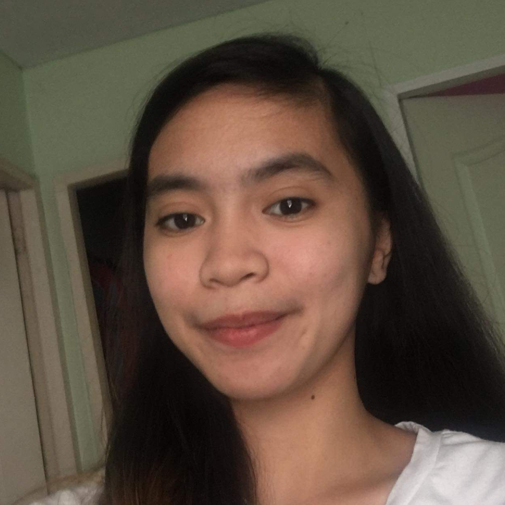

<div class="about-irams">
  <div class="information">
    <strong>
      Hello there!</strong>
    <p>
      We are students from 4th year Bachelor in Technical-Vocational Teacher Education major in Computer Programming and
      for our final requirement in our Thesis Writing subject, we decided to design and develop an institutional
      repository and archiving management system for the College of Industrial Education in TUP-Manila.
    </p>
    <p>
      Our developed repository, named iRAMS, extend its use and purpose as we integrate document collaboration tool
      feature in which students would be able to create and make their own research and thesis projects with their
      peers.
      The platform also intends to preserve and manage the scholarly works and intellectual outputs that were crafted
      and
      produced by our fellow CIEan instructors, staff, and students.
    </p>
    <p>
      With the development of iRAMS, it also increases the visibility of the College's intellectual products for future
      references and use.
    </p>
    <hr>
    
    <div class="researchers">
      <div class="d-flex contain">
        <div class="member">
          
          <strong>Allain John T. Notarte</strong>
          <span>allainjohn.notarte@tup.edu.ph</span>
        </div>
        <div class="member">
          
          <strong>Elliah Hachel A. Tolentino</strong>
          <span>elliahhachel.tolentino@tup.edu.ph</span>
        </div>
        <div class="member">
          
          <strong>Charmaine Aplaon</strong>
          <span>charmaine.aplaon@tup.edu.ph</span>
        </div>
      </div>
    </div>
  </div>
</div>